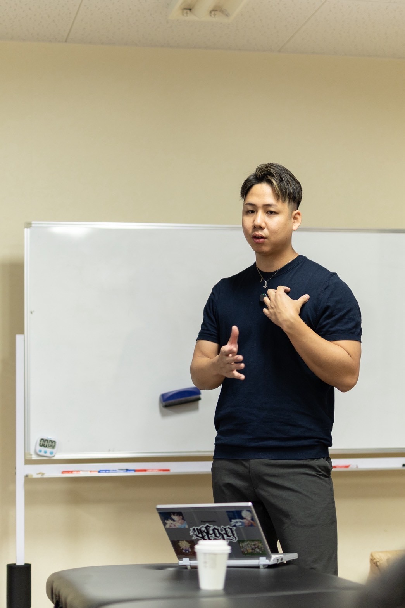
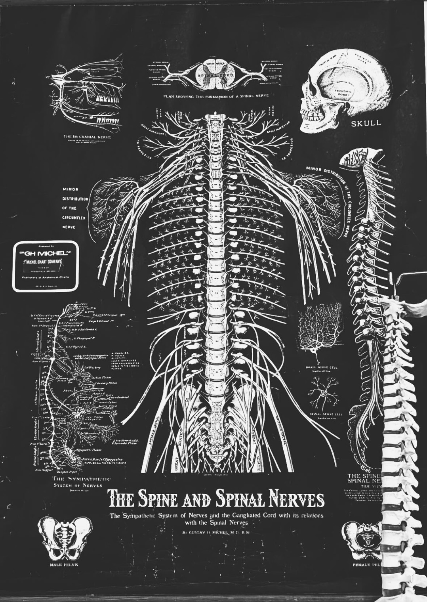
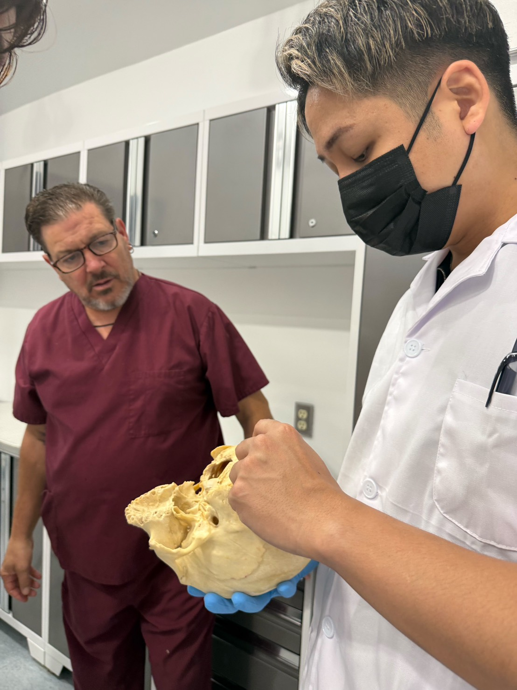

PROFILE原口慶篤について

原口 慶篤NORIATSU HARAGUCHI
パーソナルトレーナー / 整体師 / コンディショニング講師
TOTAL BODY FITNESS THEORY 代表
零式 -ZERO- Founder
ZERO MEMBERS 主宰
- トレーナー歴12年以上
- 人体解剖実習5回修了
- NASM-PES
- NSCA-CPT
- 東京サミット130名以上へ登壇
- ZERO MEMBERS主宰
- 専門コンテンツ12種類以上
大阪府出身。1996年1月20日生まれ。
12年以上にわたり、パーソナルトレーニング、整体、コンディショニングの現場で、一人ひとりの身体と向き合ってきました。
身体を一時的に整えるだけでも、筋力を高めるだけでもなく、姿勢、関節の動き、柔軟性、筋力、呼吸、動作の癖などを総合的に確認し、施術から運動までを一貫して行うことを大切にしています。
現在は個人セッションに加え、トレーナー、整体師、セラピストなどの専門家に向けたセミナー、技術研修、教材制作、コミュニティ運営にも取り組んでいます。
整えるだけで終わらない。
鍛えるだけでも終わらない。
身体の悩みは、一つの筋肉や関節だけで起きているとは限りません。
姿勢、関節の動き、柔軟性、筋力、呼吸、感覚、日常生活、スポーツ特性など、さまざまな要素が関係しています。
だからこそ、最初から「整体だけ」「ストレッチだけ」「トレーニングだけ」と方法を限定しません。
現在の身体を評価し、必要に応じて整え、その変化を動作やトレーニングへつなげる。
一人ひとりに必要な方法を、必要な順番で提供することが、原口慶篤のパーソナルセッションです。
主な活動領域
QUALIFICATIONS & EXPERTISE資格・研修歴を詳しく見る
QUALIFICATIONS & TRAINING保有資格・研修歴
- NASM-PES National Academy of Sports Medicine Performance Enhancement Specialist
- NSCA-CPT National Strength and Conditioning Association Certified Personal Trainer
- オステオパシー修了書スラスト BASIC／ADVANCE
- オステオパシー内臓調整テクニック研修
- 人体解剖実習 5回修了
- ベーシックポールインストラクター
- 赤十字救急法に関する資格・研修歴
- ダイエット力検定 C級
- 睡眠力検定 C級
- 美脚・美尻に関する専門研修
- ボディメイクに関する専門研修
AREAS OF EXPERTISE専門領域
解剖学、運動学、生理学、神経学を基礎として、カイロプラクティック、オステオパシー、関節調整、ストレッチ、東洋医学、運動指導などを継続的に学んできました。
人体解剖実習には5回参加し、書籍や映像だけでは把握しきれない実際の人体構造への理解を深めています。
また、国内外の講師から、オステオパシー、スラストテクニック、内臓調整などの専門研修を受講しています。




EDUCATION & COMMUNITY講師・教育実績を詳しく見る
EDUCATION & SEMINARS講師・教育活動
個人のお客様へのセッションだけでなく、トレーナー、整体師、セラピスト、理学療法士など、身体に関わる専門職に向けた講義・技術研修を行っています。
主な講義・研修テーマ
- 零式-関節調整法 BASIC／ADVANCE
- ヘッドコンディショニング-極-
- 零式-経絡ストレッチ
- 零式-ZERO RECOVERY
- 美姿勢セミナー
- 足部・足関節セミナー
- 膝関節セミナー
- 歩行・呼吸・姿勢に関する講義
- 個人および少人数向け技術研修
- 企業・団体向け研修
主な実績
- 東京開催のサミットにて130名以上を対象に登壇
- 大阪、東京、名古屋、三重、沖縄など各地で講義・技術研修を実施
- 専門家向けの技術セミナー、個人研修、少人数研修を継続的に開催
- 12種類以上の専門技術・教育コンテンツを制作
COMMUNITY専門家が学び続ける環境を
トレーナー、整体師、セラピストなど、身体に関わる専門家が継続的に学び、互いに成長できる環境として、零 -ZERO-およびZERO MEMBERSを運営しています。
有料会員 約 80 名
合計 約 200 名
フォロワー 約 3,000 名
最高再生数 約 24万 回
コンテンツ 12 種類以上
月1回のオンライン講義、会員限定の専門情報、セミナー、アーカイブなどを通じて、現場で学び続けられる環境を提供しています。
ZERO PHILOSOPHY不完全だからこそ、成長できる。
「零 -ZERO-」には、不完全であることを否定するのではなく、現在地を知ることで、そこから成長を始められるという意味が込められています。
身体も、技術も、知識も、最初から完成しているものではありません。
現在の状態を正しく確認し、必要なことを一つずつ積み重ねていく。
原口慶篤のセッション、セミナー、コミュニティには、この考え方が共通しています。